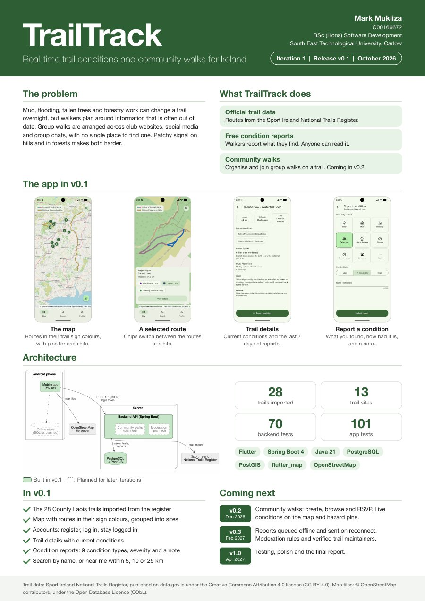

The app


An Android app for walkers in Ireland. Check a trail's condition before you head out, and report what you find so the next walker knows what to expect.
A four-minute walkthrough of release v0.1 on the Android emulator: the trail map, search, a trail's details, creating an account, and reporting a fallen tree.
Mud, flooding, fallen trees and forestry work can change a trail overnight, but walkers plan around information that is often out of date. Group walks are arranged across club websites, social media and group chats, with no single place to find one. Patchy signal on hills and in forests makes both harder.
Routes come from the Sport Ireland National Trails Register, drawn in the colours of their waymark signs.
Walkers report what they find on a trail, and anyone can read the reports, with or without an account.
Walking clubs and local walkers organise and join group walks on a trail. Coming in v0.2.
TrailTrack is built in four iterations, each ending in a tagged release with a report, a poster and a screencast.

Community walks: create, browse and RSVP. Live conditions on the map and hazard pins.
Reports queued offline and sent on reconnect. Moderation rules and verified trail maintainers.
Testing, polish and the final report.

Trails are imported from the register once and stored in PostgreSQL. PostGIS simplifies each route for the map, groups trailheads into sites, and finds the trails near a walker. The app talks to a Spring Boot REST API and draws the routes over OpenStreetMap tiles.
Generated from the code's doc comments each time the site is published.